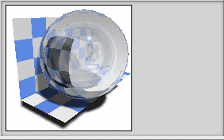

材料库
材料库  资源板显示 LightWorksTM（LWA 格式）的材料和其他第三方供应商材料的归档库。该归档是一个包含许多材料、光源和场景几何体属性的存储库。对于要为渲染任务准备资源板的任何专家而言，这都是一个良好的起点。
资源板显示 LightWorksTM（LWA 格式）的材料和其他第三方供应商材料的归档库。该归档是一个包含许多材料、光源和场景几何体属性的存储库。对于要为渲染任务准备资源板的任何专家而言，这都是一个良好的起点。
-
可以预览位于预览窗格中的材料。材料以球体的形式提供。
-
可以将其他 LightWorksTM 材料的归档添加到默认库，例如包含 LightWorksTM 提供的标准建筑材料的 AEC.lwa，或是包含 LightWorksTM 提供的标准 MCAD 材料的 MCAD.lwa
-
可以添加由第三方供应商提供的行业特定材料的集合
-
您可将材料从此资源板复制到部件中的材料资源板
-
不能将材料直接从材料库拖到您的选择中
-
不能在材料库中删除或编辑材料
|
材料库 |
|
归档 |
|
预览 |
|
 |
 归档库的存储路径
归档库的存储路径位于何处？
|
先决条件 |
必须单击可视化形状工具条上的材料/纹理 |
|
资源条 |
材料库 |